🔍 Objective
This manual is designed to assist departmental users in viewing and analyzing service delivery performance reports for their own department using the Sewa Setu Dashboard.
🖥️ Step-by-Step Instructions
1. Access the Dashboard
- Open your web browser.
- Click the Dashboard URL: Sewa Setu Dashboard
- It will redirect to the Sewa Setu Dashboard, which displays an overview of Sewa Setu Service Delivery.
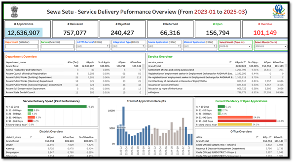
2. Summary KPIs (Top Rows)
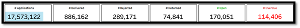
This section provides high-level performance indicators:
- # Applications – Total applications received through Sewa Setu (17.5 million).
- # Delivered – Successfully delivered services (886,162).
- # Rejected – Applications that were rejected (289,171).
- # Returned – Applications returned for correction or additional input (74,841).
- # Open – Applications currently pending (170,051).
- # Overdue – Applications open beyond their SLA/due date (114,406).
3. Filters (Below KPIs)
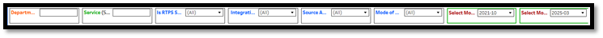
These dropdowns allow users to slice and dice data:
- Select Your Department: Use the 'Department' dropdown to select your department (e.g., Revenue & DM).
- Choose the Service: Use the 'Service' dropdown to analyze specific services (e.g., Mutation by Inheritance).
- Apply Detailed Filters:
- Is RTPS Service
- Integration Type
- Source Application
- Mode of Application
- Date Range (From Month-Year / To Month-Year)
4. Department Overview
Shows number of services and applications handled by your department, along with open and overdue cases. Helps identify backlog and performance issues.
5. Service Delivery Pendency of Open Applications
Visual breakdown by how long applications have been pending:
- A: Less than 10 Days
- B: 11–20 Days
- C: 21–30 Days
- D: 31–90 Days
- E: 91–365 Days
- F: More than 1 Year
6. Application Receipts Trend
Bar graph showing monthly application trends to help plan workloads.
7. District & Office-Level Overview
Shows district- and office-wise performance to identify low-performing regions or teams.
8. Pendency Analysis
Highlights how long current cases have been pending, with red/yellow flags for long delays.
📁 Tips for Analysis and Action
- ✅ Use filters to isolate applications pending more than 90 days.
- ✅ Drill down by district or office to locate bottlenecks.
- ✅ Use trend charts for forecasting and planning interventions.
- ✅ Export reports for review meetings (if download enabled).
🛠 Feedback
To raise queries or provide suggestions:
- Click the “Feedback” tab in the dashboard menu.
- Fill the form and submit your concern.
📘 Dashboard Explanation Using Section-wise Sample
🔍 Dashboard Overview – Revenue & Disaster Management Department (Sample)
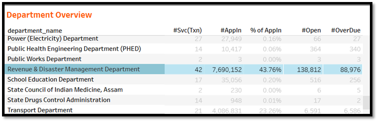
This view shows the performance of Revenue & DM Dept. under the Sewa Setu portal.
- # Applications: 7,690,152
- # Delivered: 465,593
- # Rejected: 231,331
- # Returned: 21,641
- # Open: 138,812
- # Overdue: 88,976
🏢 Department Overview – Labour and Welfare Dept. (Sample)
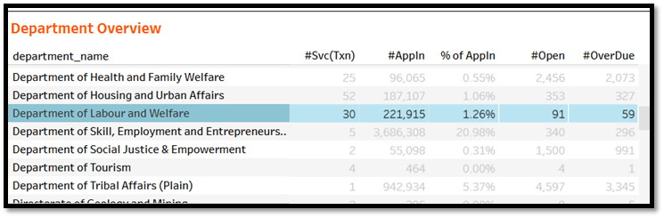
30 services contributed 2.22 lakh applications. 91 pending, 59 overdue.
📋 Service Overview (Sample)
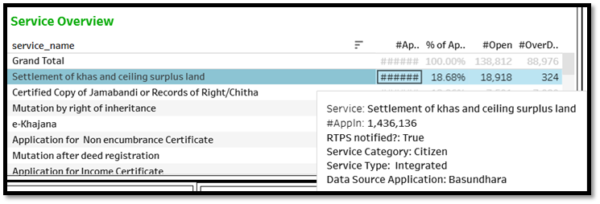
📄 Settlement of Khas and Ceiling Surplus Land: 1.4M applications, 18.9K open.
⏱️ Service Delivery Speed (Sample)
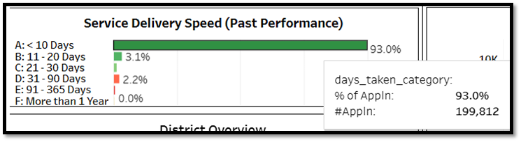
- 93% delivered within 10 days
- 2.2% took over 2 months
📈 Application Receipts Trend (Sample)
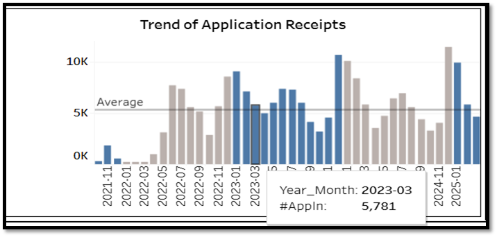
Peak: Feb–Mar 2023 (~5K/month); now stabilizing below average.
📊 Pendency Analysis (Sample)
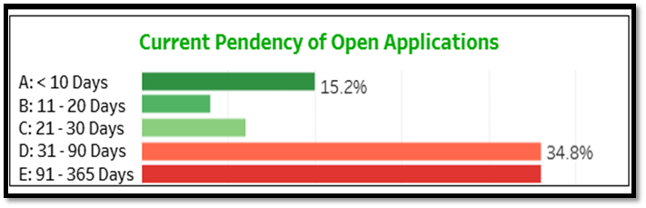
- 15.2% pending under 10 days
- 34.8% pending between 1–3 months
🌍 District View (Sample)
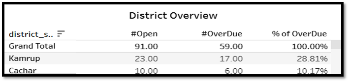
- Cachar: 10 open, 10.71% overdue
- Kamrup: 23 open, 28.81% overdue
- Total: 91 open, 100% overdue
🏢 Office View (Sample)
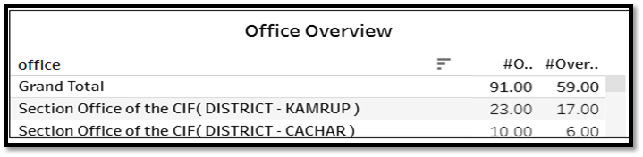
- Section Office, Dispur: 23 open, 17 overdue
- Section Office, Cachar: 10 open, 6 overdue
- Total: 91 open, 59 overdue